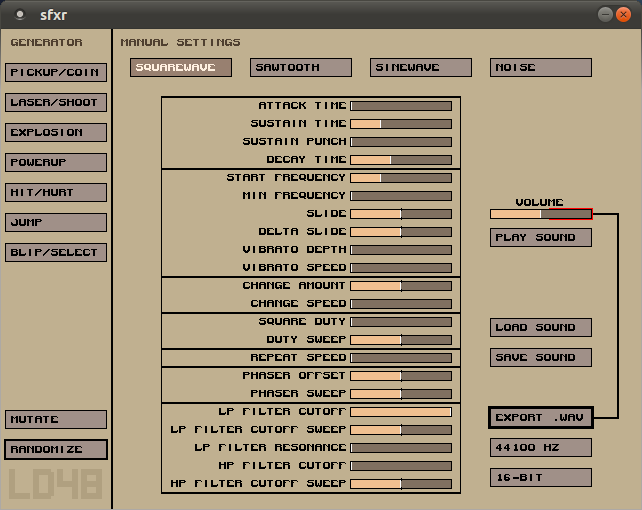
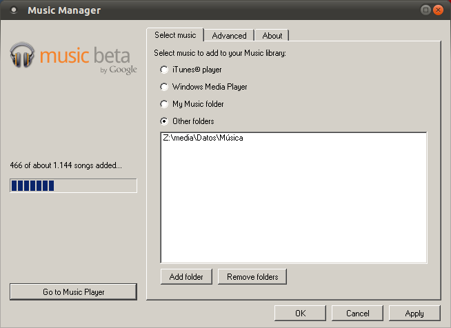

When you"re developing a game as a team, organization can be pretty challenging. You have to write code so every art asset fits in perfectly. You've probably used yourself ugly squares to represent some character's sprite in early development stages but… What happens with audio? That's when SFXR comes into play.
What is SFXR?
SFXR is a simple sound effect prototyping open source tool. It was initially developed for the 10th Ludum Dare 48h gamedev competition. People neither had the time nor expertise to produce their own SFX so they generated them almost automatically with SFXR.
SFXR only has one big panel in which you can produce your sound effects. Using the left buttons you can select pre-defined sounds for simple actions like shooting, jumping or getting a power-up. If you want more customization it's possible to adjust some sound properties such as speed, wave form and other stuff I have no idea about. You can monitor the current state of your effect by clicking the “Play sound” button. When you"re done, click the “Export .wav” button and that's it!

Downloading SFXR
SFXR is multi platform so you won't have any problems to get it running on your system. Simply, download the correspondent version:
If you want to use the GNU/Linux version you must install the SDL and GTK libraries. For Debian like distributions users, please follow these simple steps:
Install the dependencies:
sudo apt-get install libsdl1.2-dev libgtk2.0-dev
Build and install (optional):
make && sudo make install
Have fun prototyping
I"m using SFXR for Sion Tower, the strategy action game I"m developing right now and I"m quite happy with it. A colleague of mine who studied sound production is working on the effects for the game. In the meanwhile, testing the sound system with SFXR is working great!
Tras la lamentable X-Men 3: The last stand, no tenía demasiadas esperanzas puestas en esta precuela. Sobre todo prescindiendo de todos los actores con cierto caché de episodios anteriores como Ian McKellen (Magneto), Patrick Stewart (Charles Xavier) o Hale Berry (Tormenta). Una licencia que vende y una reducción de presupuesto parecían los ingredientes idóneos para el enésimo truñaco. Nada más lejos de la realidad, X-Men: First class es una buena película de superhéroes.
X-Men: First class nos relata el origen de la patrulla X y las raíces del antagonismo entre Charles Xavier (James McAvoy) y Erik (Michael Fassbender). Con eso ya me tenían prácticamente ganado porque es una de las etapas del cómic que más me interesan. Desde la perspectiva de Magneto, que asume gran parte del protagonismo, experimentamos las heridas de una reciente Segunda Guerra Mundial, los coletazos del nazismo y el paralelismo con los florecientes mutantes: “la raza superior”.
Si se va con una mente abierta, a First class se le perdonan las innumerables licencias que se toman los guionistas. Obviando la estupidez que implicaría comentarlas todas, hay que reconocer que algunas añaden una chispa a la trama, como la participación de los mutantes en la crisis de los misiles cubanos. Siempre me ha parecido una tontería criticar las adaptaciones que introducen variaciones con respecto a la obra original. X-Men #1 fue publicado en 1963, hay una necesidad de adaptar la historia a la actualidad para llegar al gran público.
No temo equivocarme afirmando que el renovado reparto hace un gran trabajo, quizás sea porque esperaba más bien poco de ellos. Destacan sobre todo Xavier y Erik, los cuales protagonizan las secuencias más épicas de todo el metraje. El dramatismo que aporta el Holocausto y su relación con el fenómeno mutante ofrece el caldo de cultivo perfecto para que el mensaje llegue al espectador. Ah, se me olvidaba, quizás os encontréis con algún cameo especial.
Incluso teniendo un fondo que invita a la reflexión, es una película sencilla y digerible. La intensidad de la historia y las secuencias de acción hacen que sus 132 minutos de duración se pasen sin darnos cuenta. Aquí hay que hacer un apunte obligado, los efectos especiales han perdido enteros, se notan los recortes. No soy un sibarita al respecto, pero en algunos momentos no llegan ni a mediocres.
Lo dicho, a X-Men: First class le perdono sus pequeños detalles sin ningún problema. No abundan las películas por las que merezca la pena dejarse unos euros en la entrada y en esta ocasión no me he arrepentido en absoluto. En cartelera no hay ahora mismo una película de acción mejor que esta, recomendada.
Google anunció Music, su servicio de música gratuito a través de streamming en su evento I/O 2010 pero no fue hasta hace poco cuando se comenzaron a permitir registros para la fase beta. El problema es que sólo usuarios de Estados Unidos pueden solicitar la invitación y utilizar el cliente para Android. Afortunadamente hay un pequeño y sencillo procedimiento para poder saltarse esta barrera, sigue leyendo para saber cuál es. Gracias a mi buen amigo Javier por los enlaces y las pistas.
Características
Google Music nos permite subir hasta 20.000 canciones de nuestra biblioteca de música local a través de una sencilla aplicación de escritorio que sincroniza directorios de forma automática. Es una lástima que el cliente solo esté para Windows y Mac aunque de forma extra-oficial se puede utilizar en Linux bajo Wine (hablaremos de ello más adelante). El servicio toma los metadatos de las canciones para clasificarlas, por lo que es recomendable tener una biblioteca ordenada aunque podamos editarlas más tarde desde la aplicación web.
Una vez tengamos nuestra biblioteca de música en la nube, podremos escucharla desde cualquier PC con navegador y Flash instalados. La aplicación web no tiene muchas opciones por el momento pero es ligera y funciona mejor de lo esperado. Por su parte, también tenemos la aplicación para Android que nos permite reproducir por streamming y guardar las canciones en local.
Registrarse en la Beta desde España
Si acudimos a la web de Google Music desde España nos aparecerá un descorazonador mensaje que nos impide solicitar la invitación. Simplemente utilizaremos un proxy para engañar al servicio, siguiendo los pasos que nos indican en El Androide Libre no tendrás problemas:
Elije un proxy americano, los que aparecen en verde.
En la web del proxy introduce la URL: <http: music.google.com=”” music=”” usernotinvited="“>.
Inicia sesión con tu cuenta de Google, no importa que sea española.
Elije la opción de participar en la beta.
Recibirás un e-mail confirmándote el acceso a Google Music, no sé cuanto tiempo puede tardar.
Google Music Manager en Ubuntu bajo Wine
Google no nos deja descargar el manager si estamos en Linux así que tenemos que obtener el programa por otros medios como bien apuntan en Android Central. Los siguientes pasos son válidos para distribuciones basadas en Debian:
Si tenías la versión de Wine de los repositorios oficiales debes desinstalarla:
sudo apt-get remove wine --purge
Añade el PPA con la última versión de Wine, actualiza e instálalo de nuevo:
Accede desde una terminal, dale permisos de ejecución e instala:
chmod +x install.sh
./install.sh

¡Listo! Ya puedes utilizar Google Music Manager en Linux desde Aplicaciones -> Internet -> Google Music Manager.
Aplicación para Android
La aplicación de Google Music para Android sólo se puede descargar desde la web del market y detecta si nuestro dispositivo no es estadounidense. Para saltarnos este impedimento simplemente nos descargamos el APK con la última versión en la fecha de redacción de este artículo, la 3.1. Para instalarla debes tener Android 2.2 o superior ya que requiere OpenGL ES 2.0.
Lo cierto es que me da mucho miedo instalar un APK que no sea del Market pero los permisos que pide no son extraños. Nada de mandar SMS, por ejemplo. Así que con esto ya podréis disfrutar de Google Music allá donde estéis mientras el 3G no os traicione.
Primeras impresiones
Por el momento estoy muy contento con el servicio: la aplicación de Android reproduce por streamming sin problemas, la música se sube a buena velocidad y todo es bastante limpio.
Estos días he estado trabajando en la carga de enemigos dentro de Sion Tower y en las barras de vida que veis sobre sus cabezas. Tras algún que otro comedero de cabeza he acabado con un sistema bastante sencillo y que funciona exactamente como yo quería. En los siguientes párrafos explico cómo están diseñadas la aparición (spawn) de enemigos y las barras de vida para finalizar con un vídeo del resultado.
Aparición de enemigos
Como ya he mencionado en varias ocasiones, Blender será el editor de niveles de Sion Tower. Desde esta potente herramienta definimos los objetos que componen el escenario, las zonas transitables por el enemigo (malla de navegación) y ahora los puntos y el momento en el que llegan las oleadas de enemigos. Todo esto se consigue gracias al formato de exportación DotScene y a una convención de nombres.
De la aparición o spawn de un enemigo concreto necesitamos conocer:
Posición inicial.
Orientación inicial.
Tipo de enemigo.
Momento en el que aparece.
En Blender utilizamos una pequeñas pirámides horizontales para indicar la aparición de enemigos. Los dos primeros puntos ya los da la propia posición y orientación del objeto mientras que el resto lo conseguimos con el nombre del mismo. Los nombres tienen la estructura “enemy.tipo.tiempo”. Por ejemplo, un Goblin que aparezca en el segundo 1 se llamaría “enemy.goblin.1” tal y como podéis ver en la siguiente figura.
La clase Level guarda un vector de objetos EnemySpawn que simplemente contienen la información de los cuatro puntos anteriores. El cada iteración de StateGame se consulta si en el momento actual debería aparecer algún enemigo y en caso afirmativo se crea uno con las propiedades adecuadas.
Si colocamos los enemigos en el centro del escenario aparecerán súbitamente (como se muestra en el vídeo). Lo ideal es colocarlos en las puertas y que ellos mismos se desplacen para atacar al protagonista.
Barra de vida
Las barras de vida son Billboards de Ogre, rectángulos que se colocan en el espacio 3D de la escena que siempre permanecen de frente hacia la cámara. En este caso les asignamos un material con una sencilla textura que cuenta con las dos partes de la vida: la roja y la verde. La idea es que según el porcentaje de energía que le reste al enemigo, seleccionemos una porción de dicha textura utilizando las coordenadas UV. En el siguiente diagrama se ilustra el sencillo mecanismo.
Al no haber usado Billboards con anterioridad, este fue el paso que más tiempo me llevó. La ignorancia es terrible porque al final no era nada complicado, en la clase Enemy tenemos los siguientes atributos.
class Enemy: public Actor {
...
private:
Ogre::BillboardSet* _bbSetLife;
Ogre::Billboard* _lifeBar;
Ogre::SceneNode* _lifeNode;
};
Para crear la barra de vida simplemente tenemos el método createLifeBar.
En el siguiente vídeo se muestra el sistema de spawn de enemigos junto a sus barras de vida. Todo esto es “work in progress” y aún queda mucho espacio para la mejora. Se esperan cambios en las animaciones del personaje, añadir efectos de sonido, incluir la IA de los enemigos… Sean comprensivos.
IberOgre está alojada en los servidores de la OSLUCA a los que no tengo acceso y, aunque sé que se hacen copias de seguridad diarias, me gustaría tener algunas en local del trabajo que tanto sudor ha costado. Para eso, me viene de maravilla la herramienta que ha desarrollado el compañero Emilio José Rodríguez Posada: Wikiteam. A continuación, más información sobre la herramienta y cómo hacer backups de wikis con ella.
¿Qué hace Wikiteam?
Wikiteam es un script GPL v3 escrito en Python que descarga todo el contenido de una wiki que utilice el sistema Mediawiki (actualmente el más extendido). No sólo es capaz de obtener el estado actual de una wiki sino que también recupera todo el historial de cambios así como las imágenes y ficheros que se hayan subido. El único (pero comprensible) problema es que no recupera los usuarios ya que no requiere acceso a la base de datos.
El objetivo principal de Wikiteam es permitir que cualquier usuario pueda hacer una copia de una wiki. Si el sitio deja de existir por cualquier motivo, el conocimiento no se habrá perdido ya que este usuario podría restaurar la copia en un nuevo servidor. De hecho, en la forja del proyecto tienen disponibles backups de diversas wikis.
Hacer backups con Wikiteam
Generar copias de seguridad es harto sencillo y sólo requiere ejecutar el script con los parámetros adecuados. Sigue los siguientes pasos:
api: ruta a la API de la wiki, normalmente es la URL de la wiki seguida de api.php. Por ejemplo, en IberOgre es: http://osl2.uca.es/iberogre/api.php
xml: recupera todas las páginas de la wiki junto a su historial-
images: recupera todas las imágenes y ficheros de la wiki.
Restaurar backups con Wikiteam
Volcar las copias en otra instancia de Mediawiki es ligeramente más complejo y requiere, evidentemente, de acceso al servidor. Lo recomendable es que sigas el proceso detallado en la propia wiki de Mediawiki.